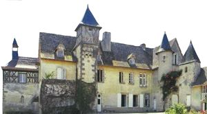
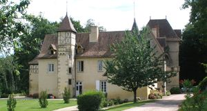
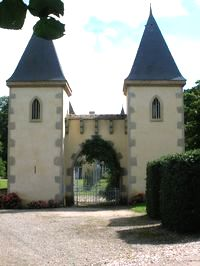
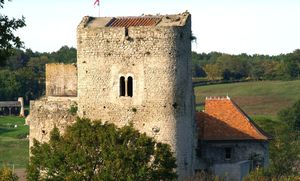
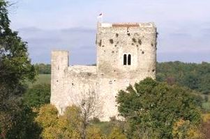
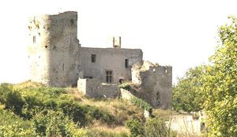
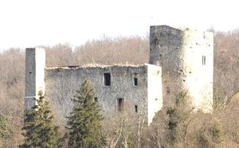

Recensement Jean-Claude Truffet
| Département | 03 — Allier |
| Canton | St-Pourcain-sur-Sioule |
| Commune | Monetay-sur-Allier |
| Type d'édifice | Château-Vestiges |
| Période d'origine | XII |







Trois châteaux à Monétay; le Montcoquet du XII-XIIIe siècle donjon et vestiges, la Chaise et le petit Bressolles du XVIe siècle (voir article). CHAISE, ce château s'appelait autrefois Le Riau, puis il a pris le nom de La Chaise, La Chaise est connue dans le passé en raison de son port fluvial, Pendant l'ancien régime l'édifice appartenait à la famille de Roys, occupant d'importantes charges administratives et judiciaires à Moulins. En 1848, quand Emmanuel Roy de Lachaise hérite de la propriété, son état général est pitoyable. Emmanuel et son épouse s'attellent alors à restaurer leur nouvelle maison. Au XIXe siècle, le château de la Chaise devint la propriété de la famille de l'Etoile qui la possède toujours. MONTCOQUET, situé à l'ouest de la commune de Monétay, le château s'élève sur une butte calcaire, c'est sans doute un des plus anciens château d'Allier. En 1300, la veuve de Galet de Moncoquier épouse Jean du Bet. Par la suite, Hugues de Bet est signalé seigneur de Montcoquier. En 1366, Jean du Colombier est dit seigneur de Montcoquier, que sa femme Isabelle de Montfan lui a apporté en dot. A la veille de la Révolution, il appartenait à Pierre de Champfeu qui mourut en 1789 sans postérité. A partir du XVIIIe siècle, le château fut abandonné et passa pour avoir servi de refuge à Gilbert de Barthelat pendant la Révolution. Au XIXe siècle, il échappa à la restauration que projetaient ses propriétaires, les Girard. Donjon et logis furent abandonnés, seuls les communs de la basse-cour continuèrent d'être occupés jusqu'en 1952.
La Chaise, édifice composite sur une base médiévale, des adjonctions eurent lieu aux XVIIe et XVIIIe siècles, avec quelques remaniements au XIXe siècle. La variété des matériaux (pierre, pisé, enduits divers, tuiles, ardoises) ainsi que la fantaisie des volumes, donnent à ce monument beaucoup de charme, accentué encore par la végétation abondante dans laquelle il semble surgir, la vue est particulièrement belle pour le promeneur descendant du bourg de Monétay. Montcoquet, on peut ainsi dire que le château de Montcoquier n'a pas subi de transformations majeures depuis les travaux du début du XVe siècle. Le château est dominé au sud par une colline qui descend en pente jusqu'à un fossé sec. Une plateforme artificielle précède encore de ce côté le pied du donjon. La première enceinte formant basse cour au nord est occupée par des communs agricoles. Un colombier,, est situé un peu plus au nord sur les derniers contreforts de l'éminence rocheuse. Le donjon ne présente pas d'éléments de défense active hormis peut-être les créneaux et hourds aux sommets des murs. Mais des recherches dans l'efficacité de la défense passive sont attestées par l'adoption des angles de murs arrondis à l'extérieur, ces solutions visant à amoindrir l'effet des projectiles contre les murailles se mettent en place à partir de la fin du XIe siècle. Elles permettent d'envisager que la tour date pour ses parties hautes de la fin du XIIe siècle, les parties basses pouvant être un peu antérieures.
Famille de Roys Famille Pierre de Champfeu "
Vestiges de Montcoquet et château de la Chaise à Monetay sur Allier.